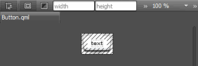
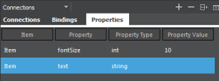
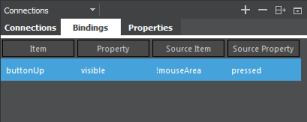
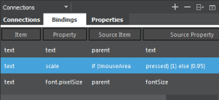
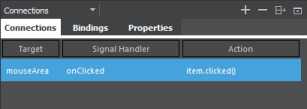

Creating Scalable Buttons and Borders
You can use the Border Image type to display an image, such as a PNG file, as a border and a background.
Use two border images and suitable graphics to make it look like the button is pushed down when it is clicked. One of the border images is visible by default. You can specify that it is hidden and the other one becomes visible when the mouse is clicked.
Add a Mouse Area type that covers the whole area and emits the clicked signal (item.clicked()) when it detects a mouse click.
You can add text to the button and set it up as a property. The text can then be initialized from the outside, making the button a reusable UI component. The font size is also available in case the default size is too big. You can scale down the button text and use smooth text rendering for some extra quality.

To create a graphical button:
- Select File > New File or Project > Qt > QML File (Qt Quick 2) > Choose to create a QML file called Button.qml (for example).
Note: Types are listed in the Library only if the filename begins with a capital letter.
- Click Design to edit the file in the Form Editor.
- In the Navigator, select Item and set the width (W) and height (H) of the button in the Properties pane.
- Select Connections > Properties > Add to add properties for the item:

- Double-click in the columns in the view to specify a
textproperty with the typestringand an empty value. - Specify another property,
fontSize, with the typeintand the value10.
- Double-click in the columns in the view to specify a
- Drag and drop two Border Image types from the Library to the item in the Navigator.
- Drag and drop a Text type to the item in the navigator.
- Drag and drop a Mouse Area to the item in the navigator.
- In the navigator, select a border image to specify settings for it in the Properties pane:
- Select Connections > Bindings > Add to hide the image when the mouse button is not pressed down. Specify the
visibleproperty with the!mouseAreasource item andpressedsource property.
- In the Source field, select the image file for the button, for example button_up.png.
- Click Layout, and then click the
 (Fill to Parent) button to anchor the border image to the Item.
(Fill to Parent) button to anchor the border image to the Item.
- Select Connections > Bindings > Add to hide the image when the mouse button is not pressed down. Specify the
- Select the other border image to specify similar settings for it:
- In Bindings, specify the
visibleproperty with themouseAreasource item andpressedsource property to show the image when the mouse button is pressed down. - In the Source field, select the image file for the button when it is clicked, for example button_down.png.
- Select Layout > Fill to Parent button to anchor the border image to the Item.
- In Bindings, specify the
- Select the text to specify font size and color, and text scaling and rendering:
- In the Color field, use the color picker to select the font color, or enter a value in the field.
- In Bindings, create bindings to properties:

- Set the source property of the
textproperty astextand the source item asparent. - Set the source property of the
font.pixelSizeasfontSizeand the source item asparent. - Set the source property of
scaleasif (!mouseAreaand the source item aspressed) { 1 } else { 0.95 }.
- Set the source property of the
- Click Layout, and then click the
 (Vertical Center) and (Horizontal Center) buttons to inherit the vertical and horizontal centering from the parent.
(Vertical Center) and (Horizontal Center) buttons to inherit the vertical and horizontal centering from the parent.
- Select mouseArea in the navigator and then select Connections > Add to set
item.clicked()as the value of theonClickedsignal handler.
- In the Text Editor, specify the
clickedsignal for the Item:Item { id: item property string text: "" property int fontSize: 10 signal clicked }
Note: To test the button, add it to a Qt Quick Application or Qt Quick UI project and run the application.